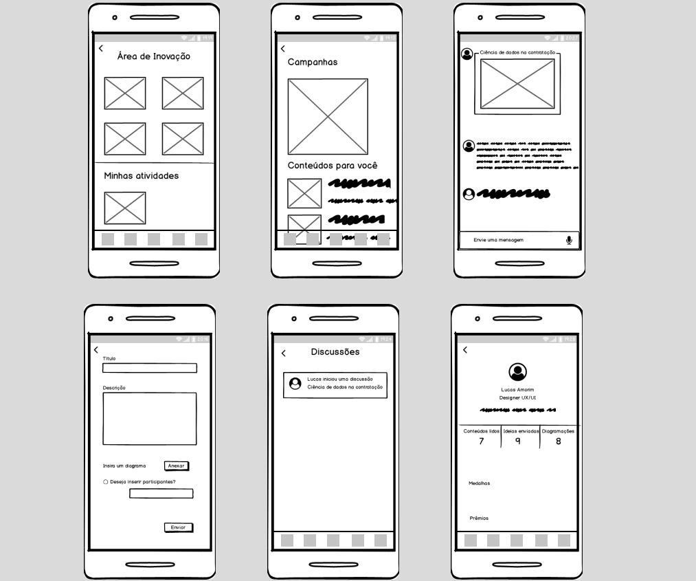

Criador
Lucas Amorim Lopes
Função
Designer UX/UI- Pesquisa do usuário
- Arquitetura da Informação
- Fluxo do Usuário
- Wireframes
- User Interface Design
- User Experience Design
- Testes de Usabilidade
Responsabilidades
O Cliente
O aplicativo é direcionado para empresas que queiram aumentar o engajamento de stakeholders através do investimento em ferramentas de inovação e criatividade o que irá gerar melhorias no seu branding.
O problema
Foi identificado na pesquisa dois tipos de necessidades que ainda precisavam ser supridas: grande parte das pessoas desconhecem ou inutilizam ferramentas poderosas de organização de ideias e criatividade, e o desafio de empresas e startups de identificar valiosos pontos de vista dos seus stakeholders, tendo a percepção de que esses públicos podem afetar ou serem afetados pelos diferentes objetivos corporativos, levando em conta os seus comportamentos que estão em constante mutação.

"Identificar e engajar as partes interessadas e suas expectativas é um fator crítico de sucesso nos projetos."- Weidman, 2004
Projeto
Aproveitei as pesquisas realizadas no meu projeto final de curso desenvolvido durante a minha trajetória no SENAI, um laboratório web de inovações, e com isso apliquei ferramentas e conhecimentos de Design UX/UI para torná-lo mais criativo, comercial, abrangente, fácil de usar e agradável. O Entropia é um aplicativo de captação de valiosos pontos de vistas e pressões de diferentes públicos, favorecendo o debate acerca das decisões de uma marca, ao mesmo tempo em que os incentiva a desenvolver capacidade de síntese e de criação,tudo isso dentro de um ambiente gamificado.
Metas
Gerar melhorias no branding de empresas e startups, maior participação dos stakeholders externos, inovar criando conceitos de gestão, estimular a criatividade e a capacidade coercitiva para todos aqueles que atuam como influenciadores de uma marca.
Público alvo
Por se tratar de um aplicativo que interliga empresas ao público externo, o público alvo é bastante amplo:
- Empresas e startups brasileiras de todos os setores
- Faixa etária: a partir dos 15 anos de idade
- Todos os níveis de renda e educação
Resultados da pesquisa
Conduzi pesquisas utilizando o Google Forms para o total de 23 pessoas dentro de alguns dos públicos-alvo do aplicativo, aqui está algumas das importantes informações adquiridas:
- Os entrevistados afirmaram não utilizar qualquer aplicativo com ferramentas de organização das ideias, sendo constantemente utilizado o Whatsapp para realizar tais funções.
- A organização, criatividade e coerência são habilidades importantes para obtermos capacidade de síntese.
- Conteúdos relacionados a inovação, criatividade e autoconhecimento ajudam melhorar a capacidade criatividade.
- Os formulários que as empresas utilizam ou fazem-nos responder em troca de prêmios é bastante inconsistente, pois a opinião ali enviada na maioria das vezes é bastante superficial.
- Não conheço nenhuma outra ferramenta que engaje, incentive à inovação, favoreça o debate e conecte os pontos de vista dos stakeholders com as empresas.
Pesquisa de Testes
"Achei bastante intuitivo e lúdico, pode ser uma boa aposta por se tratar de um produto que nunca ouvi falar, mas essa ideia do incentivo à criatividade e organização de ideias em contato com as empresas é muito interessante"
"Gostei bastante das cores utilizadas, o aplicativo é bastante interessante e eu utilizaria para minhas atividades acadêmicas e brainstormings, além dos conteúdos explicativos e motivadores que podem ser bastante úteis, gostei bastante dos grupos de discussões porque podem atuar também como formadores de opinião"
"Conteúdo motivador e preparatório, essa interligação com as empresas podem realmente ajudar a chegar essas ferramentas aonde não chegavam antes, a plataforma gamificada é bastante atrativa"
Arquitetura da Informação
Comecei tentando interligar com a arquitetura do meu antigo projeto, porém as coisas acabaram tomando rumos diferentes e as funcionalidades ficaram mais consistentes, dessa forma separei em 6 telas e funcionalidades principais do aplicativo, que são: Campanhas, Área de Inovações, Grupos de Discussões, Configurações, Notificações e Perfil. Foi dada atenção a como mover os usuários pelo aplicativo para conectá-los às ferramentas pertinentes em várias seções de conteúdo e também a ligação de cada informação das determinadas funcionalidades.

Wireframing
Mesmo iniciante, tentei utilizar os princípios do livro Atomic Design, criei elementos que seriam repetitíveis em todo o aplicativo para criar consistência e reconhecimento do usuário dos tipos de conteúdo.

Design Visual
Eu segui os padrões da logomarca do Entropia, enquanto o expandia para dispositivos móveis. Meu foco no design visual era aprimorar a funcionalidade e não deixá-la atrapalhar a localização de informações rapidamente. Embarcando nos conceitos da psicologia das cores, utilizei a paleta de cores primárias com o intuito de tornar o visual mais sociável e extrovertido, ao mesmo tempo em que transmite calma e confiança, além do uso ponderado de cores secundárias em todo o aplicativo que serviram apenas para ajudar o usuário a navegar no aplicativo e fornecer dicas visuais para diferentes tipos de conteúdo.


UI Final
O resultado é um aplicativo fácil de usar, agradável e lúdico, fazendo com que os usuários melhorem suas habilidades de organização, criatividade além de criar uma ponte entre as decisões das organizações transformando o seu branding.